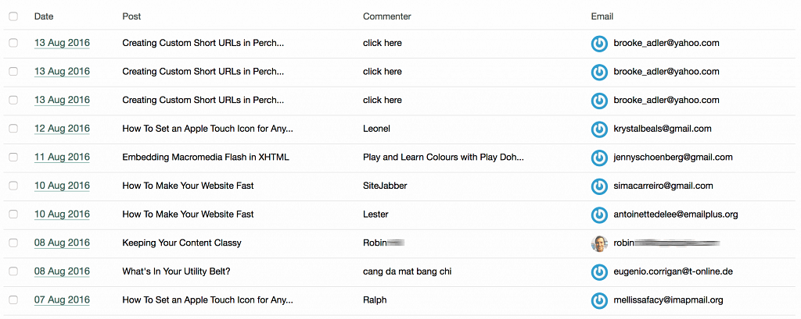

Using Gravatar as a Spam Indicator
One of the necessary evils of running a website that includes user comments is eventually sifting through spam. Even if you have a good anti-spam filter like Akismet in place, you still need to occasionally wade through the comments to check for false positives.
Today, I’ve been updating the Perch Blog add-on to make it compatible with the upcoming Perch 3, and one of the pages I’ve been tackling is comments listing page. The listings API in Perch 3 has the option of including a Gravatar alongside any email address column. On adding this to my comments listing, I noticed that genuine—non-spam—comments visually jumped out of the listing because they had a Gravatar configured. All the spammers were using defaults.
Testing this further, I was able to page through a list of 319 pending comments from this blog (I’ve not been posting much lately, so get mainly spam) and was able to find the genuine comments with much greater ease. They just immediately stood out.
Obviously this isn’t a watertight test for whether a comment is spam or not, but I thought I’d share it as a quick tip for helping administrators find real comments amongst the spam with much greater ease.
add comment